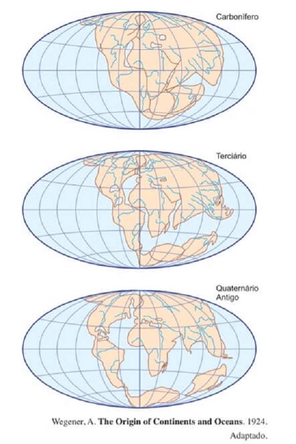
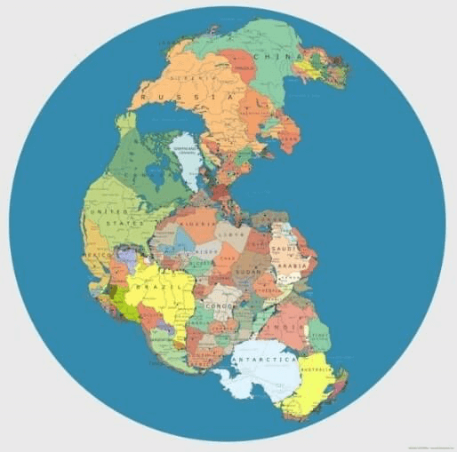
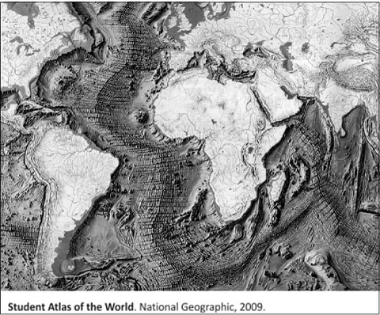
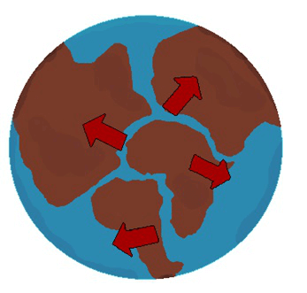
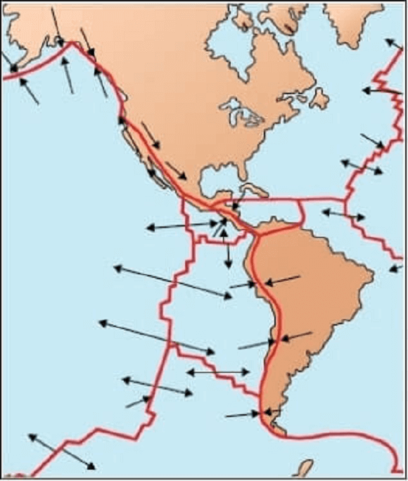
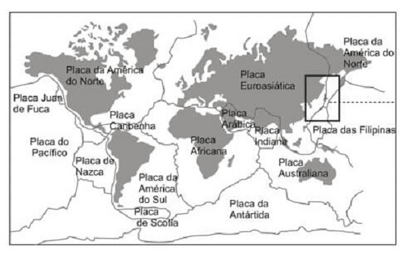
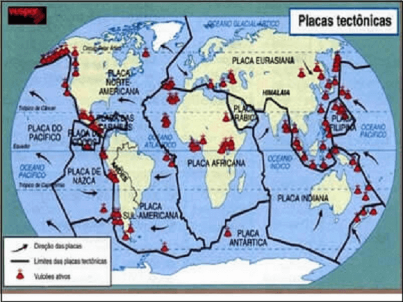
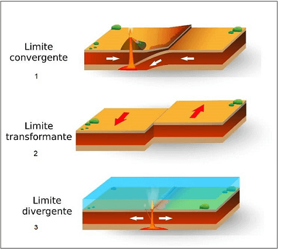

Conteúdo: Deriva continental, Tectônica de placas, isostasia, Correntes de Convecção, tipos de falhas tectônicas.
Objetivo: Entender os processos de separação dos continentes terrestres por meio da teoria da deriva continental e tectônica de placas.
Questão 01
(FUVEST 2019) A Litosfera é fragmentada em placas que deslizam, convergem e se separam umas em relação às outras à medida que se movimentam sobre a Astenosfera. Essa dinâmica compõe a Tectônica de Placas, reconhecida inicialmente pelo cientista alemão Alfred Wegener, que elaborou a teoria da Deriva Continental no início do século XX, tal como demonstrado a seguir.

As bases da teoria de Wegener seguiram inúmeras evidências deixadas na superfície dos continentes ao longo do tempo geológico. Considerando as figuras e seus conhecimentos, indique o fator básico que influenciou o raciocínio de Wegener.
a) As repartições internas atuais dos continentes no Hemisfério Norte
b) A continuidade dos sistemas fluviais entre América e África
c) As ligações atuais entre os continentes no Hemisfério Sul.
d) A semelhança entre os contornos da costa sul-americana e africana.
e) A distribuição das águas constituindo um só oceano
Comentário:
A teoria da deriva continental elaborada por Wegener surgiu quando o climatólogo alemão leu um artigo no qual dizia que foram encontrados fósseis de animais e de plantas na costa sul-americana e na costa africana. Após isso, ele iniciou uma pesquisa para comprovar que esse nunca poderiam ter ultrapassado a fronteira marinha, mesmo assim eram encontrados em diferentes continentes pelo mundo, indicando dessa forma a existência, no passado, de um supercontinente unificado.
a) Incorreta. Não foi as divisões internas do continente norte-americano o principal fator para a busca de confirmação das hipóteses de que os continentes estivessem unidos em uma única massa continental no passado.
b) Incorreta. Os sistemas fluviais são os rios e não há evidência de que eles estavam unidos no passado. São necessárias mais evidências para enriquecer a teoria da deriva continental.
c) Incorreta. Wegener comparou evidências com argumento paleontológicos, como fósseis e morfológicos tal como as formas dos continentes distantes um do outro. Não há, portanto, evidência suficientes somente no continente do hemisfério sul que confirmem a teoria da Pangeia.
d) Correta. Essa semelhança geométrica entre as costas da África e da América do Sul já havia sido notado desde que os primeiros mapas com maior grau de precisão foram elaborados a partir do século XVI.A partir dessa ideia, Wegener criou sua hipótese e foi em busca de provas para confirmá-la.
e) Incorreta. Atualmente não há um único oceano. O Pantalassa (do grego pan – tudo e thalassa – oceano) era o vasto oceano que rodeava a Pangeia. Portanto, trata-se do oceano descoberto após a formulação da teoria da deriva continental e das placas tectônica e não uma evidência para confirma a teoria de Wegener.
Questão 02
(ENEM 2019)

Disponível em: https://hypescience.com. Acesso em: 1 dez. 2018 (adaptado).
A divisão política do mundo como apresentada na imagem seria possível caso o planeta fosse marcado pela estabilidade do (a)
a) ciclo hidrológico
b) processo erosivo
c) estrutura geológica
d) índice pluviométrico.
e) pressão atmosférica.
a) incorreta. O ciclo hidrológico influencia a alteração superficial da paisagem e não a estrutura das terras emersas.
b) incorreta. O processo erosivo influencia a alteração superficial da paisagem e não a estrutura das terras emersas.
c) correta apresenta as principais dinâmicas da crosta ao longo dos milhões de anos de formação. A imagem apresenta uma divisão política atual no mapa de uma possível Pangeia que existiu entre 500 e 240 milhões de anos atrás.
d) incorreta. O índice pluviométrico influencia a alteração superficial da paisagem e não a estrutura das terras emersas.
e) incorreta. A pressão atmosférica influencia a alteração superficial da paisagem e não a estrutura das terras emersas.
Questão 03
(Fuvest 2015) Observe a figura, com destaque para a Dorsal Atlântica.

Avalie as seguintes afirmações
I. Segundo a teoria da tectônica de placas, os continentes africano e americano continuam se afastando um do outro.
II. A presença de rochas mais jovens próximas à Dorsal Atlântica comparada à de rochas mais antigas, em locais mais distantes, é um indicativo da existência de limites entre placas tectônicas divergentes no assoalho oceânico.
III. Semelhanças entre rochas e fósseis encontrados nos continentes que, hoje, estão separados pelo Oceano Atlântico são consideradas evidências de que um dia esses continentes estiveram unidos.
IV. A formação da cadeia montanhosa Dorsal Atlântica resultou de um choque entre as placas tectônicas norte americana e africana.
Está correto o que se afirma em:
a) I, II e III, apenas.
b) I, II e IV, apenas.
c) II, III e IV, apenas
d) I, III e IV, apenas.
e) I, II, III e IV.
A figura mostra a Dorsal Atlântica, onde o movimento divergente das placas tectônicas mostra os continentes africano e americano se afastando. Semelhanças entre rochas e fósseis encontrados nos continentes são evidências de que um dia esses continentes estiveram unidos, segundo a teoria de Alfred Wegener conhecido como Deriva Continental”. O único item incorreto, IV, fala do choque entre as placas tectônicas norte-americana e africana, quando na verdade ocorreu separação
I) Correta. Segundo a teoria da tectônica de placas e deriva continental, os continentes africano e americano faziam parte de um supercontinente chamado Pangeia, que foi se desmembrando a partir do final da Era Mesozoica até atingir a configuração atual, que não é definitiva no tempo geológico, pois existem correntes de convecção no magma que são as responsáveis pelo movimento dos continentes e das placas tectônicas. Dessa forma, África e América continuam a se afastar cerca de 2 centímetros por ano.
II) Correta. Os avanços tecnológicos pós II Guerra Mundial permitiram avanços nos processos de datação de rochas, confirmando que elas são mais jovens nas proximidades da Dorsal Neoatlântica e mais antigas em regiões distantes. A junção das placas Africana e Americana é construtiva ou divergente, separando esses continentes.
III) Correta. Uma das maiores evidências da união América-África é a existência de rochas e fósseis semelhantes, comprovadas cientificamente nesses continentes. Evidências estudadas desde o final do século XIX e comprovadas após a II Guerra Mundial.
IV) Incorreta. A formação da cadeia montanhosa Dorsal Neoatlântica resultou de um afastamento (borda construtiva ou divergente) entre as placas tectônicas sul-americana e africana e não de um choque entre elas, veja na imagem abaixo:

Questão 04
(Famerp 2018) Examine o mapa:

As setas no mapa correspondem
a) à direção do movimento das placas litosféricas.
b) ao deslocamento das correntes marítimas.
c) à direção do assoalho oceânico em profundidade.
d) à direção das correntes de ressurgência.
e) ao deslocamento do manto terrestre fluido.
As setas indicam as placas tectônicas que margeiam a América. Deslocamentos dessas placas são as causas de abalos sísmicos, frequentemente recorrentes em diversas partes do continente americano, e de vulcanismo. Resp.: A
Questão 05
(Mackenzie 2014)
Placas Tectônicas)

Observando a figura, podemos afirmar que:
I. Alfred Wegener, meteorologista alemão, levantou a hipótese, no início do século XX, afirmando que, há 220 milhões de anos, os continentes formavam uma única massa denominada Pangeia, rodeada por um oceano chamado Pantalassa. Essa suposição foi rejeitada pela comunidade científica da época.
II. A litosfera encontra-se em movimento, uma vez que é composta por placas tectônicas seccionadas que flutuam deslocando-se lentamente sobre a astenosfera.
III. A cordilheira dos Andes é um dobramento recente. Datando do período Terciário da era Cenozoica, surge do intenso entrechoque das placas do Pacífico e Sul-Americana promovendo o fenômeno de obducção.
IV. A Dorsal Atlântica estende-se desde as costas da Groenlândia até o sul da América do Sul. Os movimentos divergentes entre as placas Africana e Sul- Americana permitiram intensos derramamentos magmáticos originando rochas basálticas que foram incorporadas às bordas das referidas placas.
Estão corretas:
a) I e III, apenas
b) II e III, apenas
c) I, II e III, apenas
d) I, II e IV, apenas.
e) I, II, III e I.
Alfred Lothar Wegener foi um grande geógrafo e meteorologias que propôs a famosa teoria da derivação continental. Foi o primeiro a apresentar grandes provas quanto a sua teoria de que os continentes formavam uma única massa na qual nomearam de Pangeia. Grande parte da comunidade cientifica queria uma explicação do porquê e qual a força que havia levados todos os continentes a se separarem, pelo fato de não saberem a resposta suas ideias caíram por terra.
A formação da cordilheira dos Andes se deu através da convergência entre as placas de Nazca e da América do Sul, lá onde ocorre o processo de afundamento de uma placa litosféricas, fenômeno esse denominado de subducção. Por conta disso a Cordilheira do Andes é considerada dobramento moderno da Era Cenozoica no seu Período Terciário.
Questão 06
(UNESP 2011)
As quatro afirmações que se seguem serão correlacionadas aos seguintes termos:
(1) vulcanismo
(2) terremoto
(3) epicentro
(4) hipocentro
a. Os movimentos das placas tectônicas geram vibrações, que podem ocorrer no contato entre duas placas (caso mais frequente) ou no interior de uma delas. O ponto onde se inicia a ruptura e a liberação das tensões acumuladas é chamado de foco do tremor.
b. Com o lento movimento das placas litosféricas, da ordem de alguns centímetros por ano, tensões vão se acumulando em vários pontos, principalmente perto de suas bordas. As tensões, que se acumulam lentamente, deformam as rochas; quando o limite de resistência das rochas é atingido, ocorre uma ruptura, com um deslocamento abrupto, gerando vibrações que se propagam em todas as direções.
c. A partir do ponto onde se inicia a ruptura, há a liberação das tensões acumuladas, que se projetam na superfície das placas tectônicas.
d. É a liberação espetacular do calor interno terrestre, acumulado através dos tempos, sendo considerado fonte de observação científica das entranhas da Terra, uma vez que as lavas, os gases e as cinzas fornecem novos conhecimentos de como os minerais são formados. Esse fluxo de calor, por sua vez, é o componente essencial na dinâmica de criação e destruição da crosta, tendo papel essencial, desde os primórdios da evolução geológica.
TEIXEIRA, Wilson, et al. Decifrando a Terra, 2003. (Adaptação)
Os termos e as afirmações estão corretamente associados em:
a) 1d, 2b, 3a, 4c.
b) 1a, 2c, 3d, 4b.
c) 1b, 2a, 3c, 4d.
d) 1c, 2d, 3b, 4a.
e) 1d, 2b, 3c, 4a.
Questão 07
(UCPEL 2009) A "Teoria da Tectônica das Placas" procura explicar a formação dos continentes e dos oceanos, assim como do relevo submarino. Juntamente com a "Teoria da Deriva Continental" temos o apoio para a explicação de uma série de fenômenos que ocorrem em nosso planeta. Observe a figura a seguir.

Com relação ao tema, é correto afirmar que
a) as mudanças climáticas ocorridas ao longo do tempo não podem ser associadas à divisão do continente único até a configuração atual que modificou a distribuição das superfícies sólidas e líquidas do planeta.
b) a teoria da deriva continental explica a gênese dos dobramentos modernos (Andes, Montanhas Rochosas, Himalaia, entre outros) que teriam ocorrido pelo afastamento entre as placas.
c) os processos erosivos que esculpem o relevo, conferindo-lhe formas conhecidas no interior dos continentes, são facilmente explicados pela teoria das placas tectônicas.
d) os fundos oceânicos não apresentam atividade sísmico-vulcânica em função de não apresentarem contato entre as placas.
e) a teoria da deriva continental ajuda, em muitos casos, a explicar as semelhanças e as diferenças de espécies animais e vegetais distribuídos pelos continentes.
Questão 08
(IFMG-2015) O estabelecimento da teoria da Tectônica de Placas foi um importante marco para o desenvolvimento das Geociências.
Sobre essa teoria e os processos a ela relacionados, analise as afirmativas e marque a opção correta.
a) Os terremotos são fenômenos de ordem geológica comuns nos limites de placas, explicando, por exemplo, os tremores que vêm ocorrendo no norte de Minas Gerais.)
b) O mapeamento do fundo oceânico levou à descoberta de evidências que comprovaram o movimento dos continentes confirmando a Deriva Continental (1915) e fornecendo os argumentos para elaboração da Tectônica de Placas (1960)
c) Uma zona de subducção se forma na faixa de contato entre placas divergentes, como no caso da América do Sul e Nazca, em que a placa oceânica, menos densa, mergulha sobre a continental.
d) As correntes de convecção, consideradas o motor da Tectônica de Placas, constituem-se na explicação fundamental para a movimentação dos continentes. Tais correntes foram descobertas pelo cientista alemão Alfred Wegener há mais de 100 anos.
Questão 09
(UERR 2020) A figura abaixo demonstra a dinâmica de interação das placas tectônicas. Com base nela, identifique a que placa se refere e suas características

a) O esquema 1 refere- se a placa transcorrente (transformante) no qual as placas se encontram, ou se chocam; O esquema 2 refere-se a dinâmica convergente, no qual as placas se deslizam em lados opostos; O esquema 3 refere-se a placa divergente no qual as placas se separam em lados opostos.
b) O esquema 1 refere- se a placa divergente no qual as placas se encontram, ou se chocam; O esquema 2 refere-se a dinâmica transcorrente(transformante), no qual as placas se deslizam; O esquema 3 refere-se a placa convergente no qual as placas se separam em lados oposto.
c) O esquema 1 refere- se a placa convergente no qual as placas se encontram, ou se chocam; O esquema 2 refere-se a dinâmica transcorrente(transformante), no qual as placas se deslizam; O esquema 3 refere-se a placa divergente no qual as placas se separam em lados opostos.
d) O esquema 1 refere- se a placa transcorrente (transformante) no qual as placas se separam em lados opostos; O esquema 2 refere-se a dinâmica convergente, no qual as placas se deslizam em lados opostos; O esquema 3 refere-se a placa divergente no qual as placas se encontram, ou se chocam.
e) O esquema 1 refere- se a placa convergente no qual as placas se separam em lados opostos; O esquema 2 refere-se a dinâmica transcorrente (transformante), no qual as placas se deslizam; O esquema 3 refere-se a placa divergente encontram, ou se chocam.
Questão 10
(2020) Inicialmente, o mundo era um só, existindo apenas um continente denominado Pangeia. Com os passar dos milênios, as ____________________ foram se movimentando, o que proporcionou a fragmentação do gigante continental. Então, dois novos supercontinentes surgiram: a __________________ e a _________________. Mais tarde, as movimentações da crosta continuaram, graças à ação das ____________________, possibilitando a formação dos atuais continentes.
Assinale a alternativa que completa corretamente as lacunas acima.
a) Placas Tectônicas, Laurásia, Gondwana, camadas litosféricas.
b) Formações Rochosas, Laurásia, Gondwana, células de convecção
c) Placas Tectônicas, Eurásia, Antártida, movimentações pedogênicas.
d) Formações Rochosas, Eurásia, Hierópolis, movimentações pedogênicas.
e) Placas Tectônicas, Laurásia, Gondwana, células de convecção.